The Hunter's Nightmare is a location in Bloodborne. It is part of The Old Hunters DLC. The next area is the Research Hall
General Information
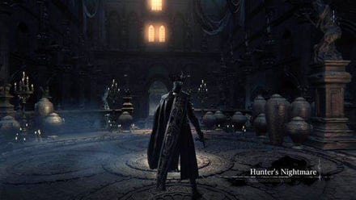
- Previous: /
- Next: Research Hall
- Suggested Level: 75 to 85 for first visit, 90 to 100 for Laurence (NG) 110 for first visit (NG+)
- Suggested Upgrade: +7 or +10
- Bosses: 2
- Lamps: 2
- Insight Gained:
- Find Ludwig, the Holy Blade (+?), Defeat Ludwig, the Holy Blade (+?),
- Find Laurence, the First Vicar (+?), See ?? (+?), Defeat Laurence, the First Vicar (+?)
The Hunter's Nightmare Map
{kind=link}
NPCs in the area
- Harrowed Hunter, at the shortcut leading back to the first lamp. He has a quest you can complete to obtain Simon's Bowblade and Bloodletter
( Note: It is not necessary to complete the quest line for these weapons. Killing this NPC will grant the Bowblade, while the key given through his quest line for the Bloodletter will be found later in the DLC) - Brador, after the boss, in the cell that is accessed with Underground Cell Inner Chamber Key
- Old Hunter Yamamura, after the boss, in one of the cells accessed with the Underground Cell Key
- NPC Summons:
- Valtr (Next to the broken gate before Ludwig; the summon sign will disappear forever if Valtr dies in the forbidden woods, either by ranking him up or killing him.)
- Old Hunter Henriett (will not be able to summon after Younger Madaras Twin)
- Younger Madaras Twin (in the alcove the second bell axe monster comes out of)
Bosses
Items
Weapons & Armor
- Amygdalan Arm
- Beasthunter Saif
- Beast Cutter
- Bloodletter (via Harrowed Hunter quest completion))
- Boom Hammer
- Church Pick
- Fist of Gratia
- Gatling Gun
- Holy Moonlight Sword
- Simon's Bowblade (if Harrowed Hunter is killed; Confirmed)
- Whirligig Saw
- Constable Set
- Butcher Set
- Molotov Cocktails x3
- Delayed Molotov x5
Consumables
- Twin Blood Stone Shards x9
- Blood Vials x20
- Madman's Knowledge x4
- Beast Blood Pellets x3
- Blood Stone Chunks x3
- Oil Urns x3
Specials
Enemies
- Beast Patient
- Bloodsucking Beast
- Carrion Crow
- Eye Collector
- Blood Dobermann
- Blood-Starved Beast
- Nightmare Huntsman
- Beast Cutter Hunter
- Piercing Rifle Hunter
- Boom Hammer Hunter
- Saif Hunter
- Vicar of the Cosmos
Lore Notes
- N/A
The Hunter's Nightmare Walkthrough
Prerequisites to Enter the Nightmare
You will need to acquire the Eye of a Blood-Drunk Hunter, from the Hunter's Dream after defeating Vicar Amelia, and the Impurity Rune from Valtr in the Forbidden Woods.
You are now ready to enter the DLC. Just head over to Cathedral Ward, and proceed down the stairs into the open area with gravestones. If you cast your mind back to where you looted the Hunter Set, you'll remember the threat of being grabbed by a "blue light" enemy, and how we did our best to avoid that. Well there comes a time in every man's life where we have to face our fears, so brave the grab, and head into the Nightmare.
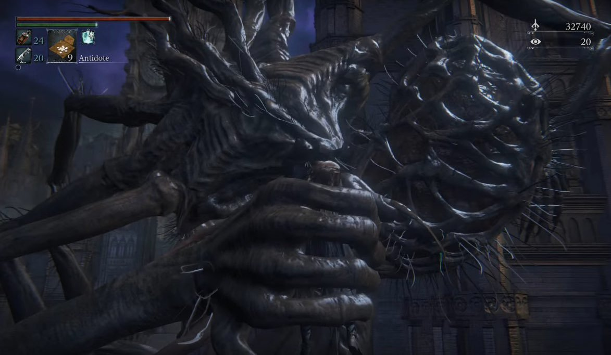
Spooky Chapel
You start the area in a slightly smaller version of Oedon Chapel. As you move forward from the lamp, to the right is a sealed door and straight ahead is your path. Come out of the chapel to find a broken, warped and overgrown version of Cathedral Ward. The overall geography is largely the same, but much has changed. To the left, where Eileen would be in your first encounter with her, you'll find a Frenzied Coldblood (8). To the right, instead of heading straight up the stairs, go up the other side of the building you just exited to pick up a Twin Blood Stone Shards, then continue up. Right as you're approaching the first two enemies of this section, look for a drop on the left of the hill you're on; this loot is the Old Hunter Gloves. Drop down to the bottom then head back up, the same way you came, to take on the Beast Cutter Hunter.
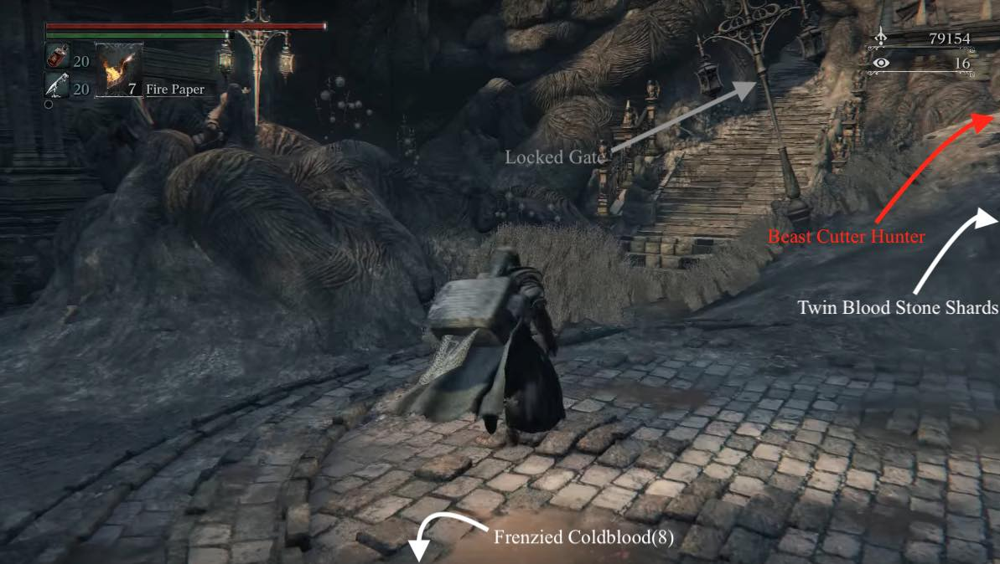
Continue along this path to come into a big open area, finding 3x Blood Vials forward-left, and a Frenzied Coldblood(9) around a tiny fence on your immediate right. You can also find 3x Blood Stone Twin Shards on a tombstone, and on the ground level, 1x Madman's Knowledge, 6x Blood Vials. If you hug the left of the big area, you should come across a group of Beast Patients (also where you find the 6x Blood Vials), take care of them then continue hugging the left, sticking to this circular area.
You'll eventually come across two hunters fighting a horde of Beast Patients. You do not want to take these two on at the same time. One carries a Beast Cutter and the other, a Boom Hammer. Bait them out one by one and get your parries in to deal with them as quickly as possible. Keep an eye on the Beasts as well, you don't need to be in the middle of a very intense battle and have one of them start causing you problems.
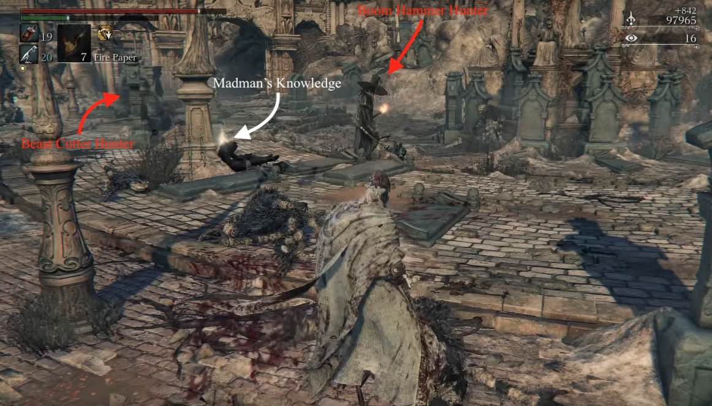
Path to the Vicar
Head back up the way you came and press forward. As you move up the path, you'll see down to the Cathedral Ward graveyard. Pay attention, as two Hunting Dogs will come for you. Kill these and slowly continue on. Another hunter lies in wait to ambush you; a Saif Hunter. Up here, above the stone archway, you can pick up a very cheeky 3x Twin Blood Stone Shards, and 3x Blood Vials across you. From here, you can head to the stairs and press on left, or you can head right.
- Heading and dropping right will give you access to the Old Hunter Trousers, and open up a shortcut to the beginning of the level (the giant metal gate, if you went up the stairs, and didn't follow the slope on the right). You will however have to fight a group of Carrion Crows before raising this portcullis, and possibly a Beast Cutter Hunter after, before picking up the Old Hunter Cap. From here you can either go down the stairs, then retake the initial route you took in the beginning, or you can go back through the gate and up the stairs, fighting a few Patients before getting to the top, and arriving right next to the spot you chose to take a right.
When you eventually go left (where the Church Doctor would normally be in the normal Cathedral Ward), you can see there are a group of beasts on a rooftop. If you take these on, be prepared for a tough fight as a red-eyed variant of the Boom Hammer Hunter will drop down from the nearby tower and attack you. Red-eyed hunters are much stronger than normal hunters, do not respawn, and drop Vermin.
To the right of the main staircase, take the stairs leading down, deal with the three beasts, carry on further down and deal with the Carrion Crows, then pull the lever to open the gate and your first shortcut. Return to the main path then carry on up to the next level, where two hunters will trigger a burning boulder to roll down at you. Lure the rolling boulder then roll out of the way to either side to get an easy strike and claim the Blood Echoes of the murdered Beasts.
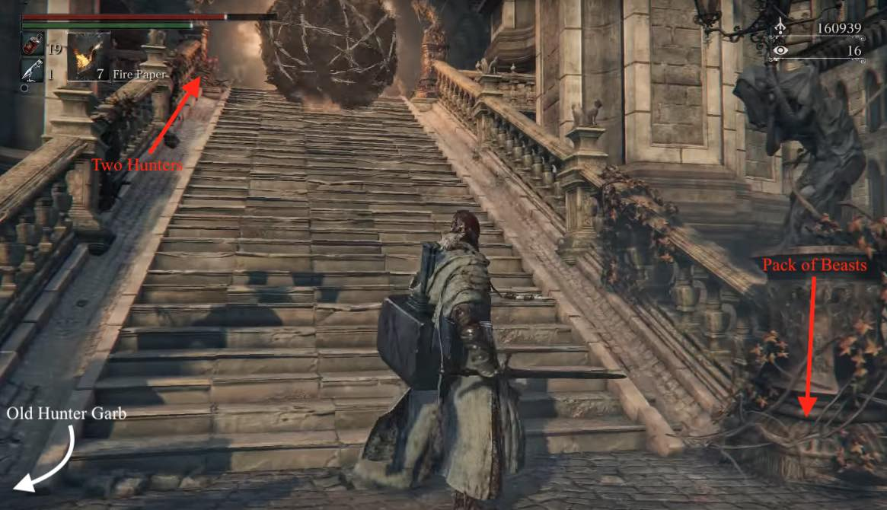
Carry on up the stairs to the doors of the Grand Cathedral. You can find a drop on either side of the stairs: left is 3x Molotov Cocktails, right is 6x Blood Vials. When you get close, the church bells will start to chime and the two hunters at the top of the stairs will run to the door. It will burst open and Vicar of the Cosmos will burst out at them. He will kill them for you, then charge at you. Here's a few tips and notes on him:
- He has the same moveset as the normal Executioners you find around Yharnam, however he's twice the size and twice as dangerous.
- A simple way to dispose of this enemy is to double back and guide a hunter into its path, goading the two to fight each other. The best option for this is the Boom Hammer Hunter that drops onto the ledge overlooking the graveyard, due to his higher HP and proximity to the Vicar. Once either the Vicar or the Hunter falls to the other, quickly step in and dispatch the weakened victor.
- Or, if you are having issues with him, you can just run straight past him, potentially while he is fighting the two hunters who open the door. He will lose interest fairly quickly once you break line-of-sight, or get far enough away from him. From there, he is fairly easy to sneak up behind for a backstab plus visceral attack.
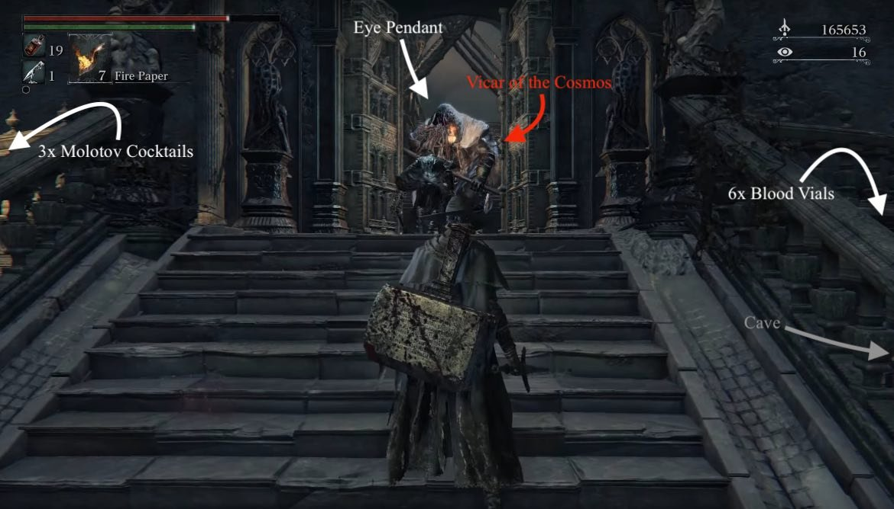
Once he is down, head into the Grand Cathedral. You'll see a creature lying on the altar, it won't aggro so go and take the Eye Pendant from its hand. There's nothing more to do here for now, so head out of the Grand Cathedral and immediately take a left into a cave in the wall. Note that after finding Laurence's Skull at the end of the Hunter's Nightmare area, before reaching the Research Hall, you can return to this room to fight a boss: Laurence, the First Vicar (the creature lying on the altar).
Into the Caves
Follow the path down the cave until you exit at the bottom. DON'T run straight out. There is a Nightmare Huntsman at the end of the path with three turret guns that will fire in sequence straight down the middle of the path. To avoid the shots, wait until the middle gun has fired, then duck between cover on the LEFT side of the path. No fire is directed down the left of the path. BE WARY, halfway down the path, next to the Amygdala skull there is a pressure pad which will fire a hidden turret at you. When you can get close enough, attack the turrets to take them out of action, then kill the Nightmare Huntsman and his buddy, ahead on the right.
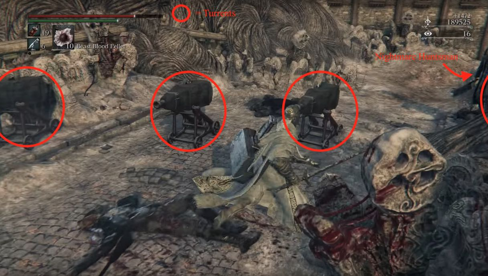
Continue down the path to find three more Nightmare Huntsmen and another Boom Hammer Hunter. The Huntsmen will throw Delayed Molotovs at you, which have a several second fuse before they blow. Keep an eye on where they throw them in relation to you. You're going to want to pull the Boom Hammer Hunter up to the area where the turrets are to have enough room to fight him effectively. Once they're all dealt with, there's a small section lower than the main path with a Twin Blood Stone Shards and another Huntsman.
Back to Basics
Head into the dimly-lit house (which you'll remember is the house that served as a shortcut to the Great Bridge in the main game) and pick up the 5x Delayed Molotovs beyond the barrels. Two more Huntsmen will walk up the stairs, brush them aside. Head downstairs and yet another Huntsman awaits to test your patience. On the ground floor, you can pick up your own Boom Hammer, however you want to be fast, there are pots of gunpowder and a delayed molotov set as a trap, so get in, get the item and get out. There are 3 exits points to this building:
- If you leave the building by the left door on the ground floor, you will ascend to where the Central Yharnam lamp would be found in the main game. Instead, find 3x Beast Blood Pellets before heading all the way up and finding another hunter, this time with Beast Claws. He will semi-transform when he aggros to you. If you want to fight him, be aware that he is very fast, has tremendous reach and can combo you to death very easily. If you do kill him, you'll get the Firing Hammer Badge as your reward.
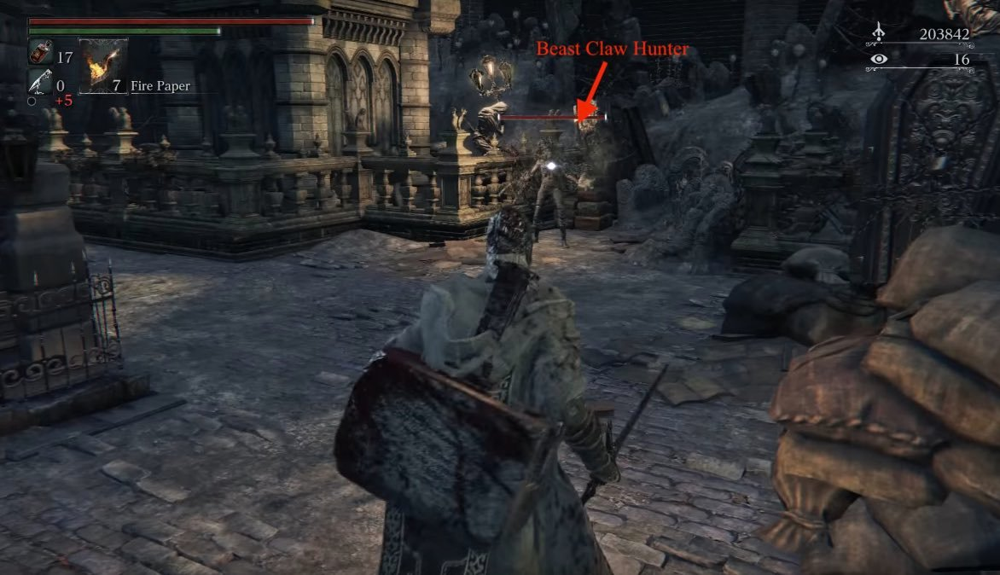
- The exit on the top floor leads out to a small area where you can pick up the Old Hunter Top Hat -and that's it! From here, you're only able to fall back down to the River of Blood where you can re-enter the building or proceed however you may like.
- The exit on the right hand side of the ground floor of the darkened house bring out to the River of Blood, where you can see a Frenzied Coldblood(8) right opposite you. Use the exit at the top of the stairs to get the Constable Gloves then drop down into the river. To the left is a bridge, and to the right are 7 Bloodlickers. Ignore these pests for now and make your way up the stairs on the side of the bridge, without aggroing any of them, if possible. Run past them an up the stairs to the bridge. There are two Huntsmen and another two Saif Hunters on the bridge. Run straight up the stairs and wail on the first hunter to the left. Once he is dead, bait out the two Huntsmen then take out the last enemy. There will be one more Huntsmen on the steps down on the other side of the bridge, but he can be ignored for now. Head over the bridge and you'll see a passage down a small slope. Before you go there, head left and up the hill to find Constable's Garb. Go back and head down the corridor. Halfway down you'll find the Harrowed Hunter. Speak to him and exhaust his dialogue, then head to the end of the corridor and open the door, which is the shortcut back to Oedon Chapel.
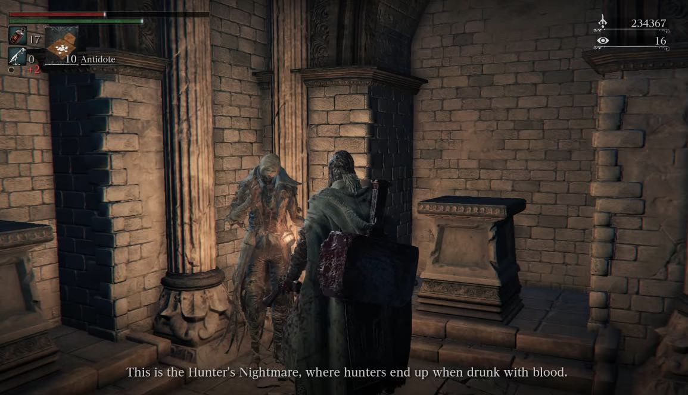
River of Blood
Returning back from the lamp to the river, clear the bridge once again, and kill the Molotov-lobbing Huntsmen on the stairs to the right. You now have more options on how to proceed:
- If you fight your way through the Bloodlickers to the left of the bridge, you can access a small optional cave, past a sunken hoarse, with some valuable loot. As you fight through the Bloodlickers in the river, you'll find a Madman's Knowledge along the way, and as soon as you enter the cave you will encounter an enemy hunter with a Gatling Gun, who drops his gun upon defeat. Within the cave itself you will find a Scurrying Beast, 2x Blood Stone Chunks, 4x Twin Blood Stone Shards, and a unique weapon called the Amygdalan Arm. These are guarded by the Gatling gun Hunter, several red-eyed Nightmare Huntsmen, and a slightly-weakened version of the Blood-Starved Beast. The challenge between the difficult enemies, and limited lighting may be overwhelming until you are leveled enough, so feel free to revisit this at a later point in time.
- On the right side of the bridge, at the end of the river will be several Bloodlickers, with a cave on the left serving as the path to the next area. If you don't want to fight them here, you can wait for the first to join the rest of the group and then sprint past into the cave, but clearing them nets you the Constable Trousers. If you decide to take them on, your best bet is to hurry into the fight with the one leaving the cave before it joins the others. After you kill the first one the cave will be clear of enemies, so it can be used as a retreat point as you carefully attack the other three. This is probably necessary if you can't clear the remaining Bloodlickers at range, as they are extremely difficult to kill without aggroing the entire group. With that being said, you can use pebbles to draw one a short distance without drawing aggro, which helps to provide a slight advantage.
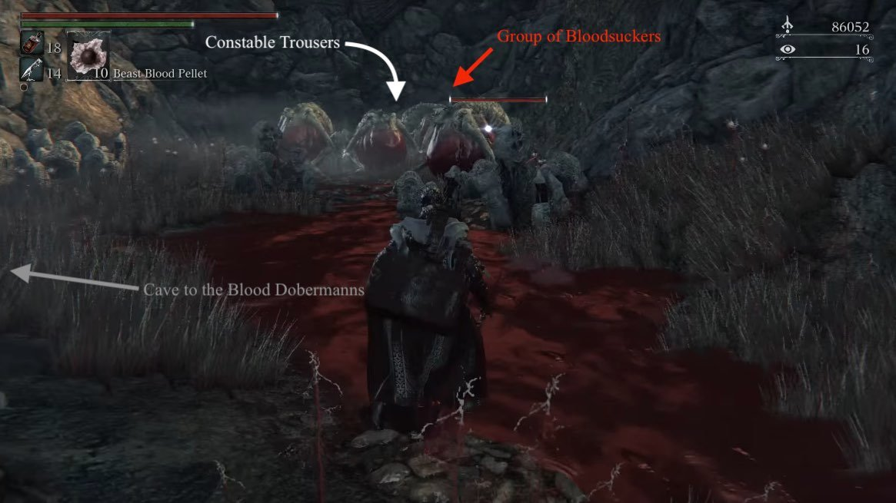
To continue, head through the cave and you'll come out at more ruins. Two Blood Dobermanns will attack you. To your immediate left, a small passage should lead you to a Frenzied Coldblood(9). Go around the fallen spire and there'll be two Carrion Crows on the ground and another Beast Cutter Hunter. There will also be another Crow lying in wait on a wooden beam above you. Head to the ladder on the left hand side of the area and climb up it. You'll be able to see a smaller raised section next to the fallen spire which has the Constable Garb on it. To reach it, find the gap in the fence, drop down to the beam the Crow was sitting on and walk over carefully.
Once you've picked it up, back track to the ladder again and this time drop off on the left side where there is a small plain area. Be careful as a Red Eyed Saif Hunter awaits. After you kill him, loot the Beast Hunter Saif near the drop off, then drop down and kill the Nightmare Huntsman and Blood Dobermann before backtracking yet again. Once you make it back up the latter, your ready to press on over the hill.
Holy Execution
You'll come to a wide open area which appears to be devoid of enemies. It's not, but don't hesitate from picking up that Madman's Knowledge visible almost immediately from falling into this area. When you step down into the area a Vicar will lumber into view. This one is carrying an enormous Church Cannon which he'll use to take potshots at you from a distance. The shots are easily dodged, but be mindful of where they'll land as they do AoE damage.
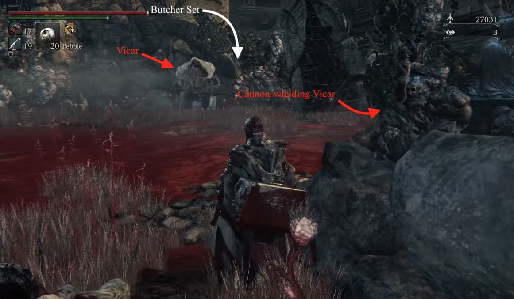
While you're engaging him, a second one will come in from a path to the left, carrying a blade. Neither of these enemies will chase you very far, and both will lose interest quickly after you break line-of-sight. An easy way to deal with them is to sprint past both of them, being careful to dodge the cannon fire, and hide somewhere behind them. Once they forget about you they will turn around, with their backs to you. At this point it is easy to sneak up behind them and use backstabs to take them down. The Butcher Set is located behind where the axe Vicar spawned and there's a Madman's Knowledge on the far side of the statue tower next to the Cannon Vicar. Head to the rear of the area where you'll find a locked gate, but a path to the left of the gate will allow you to continue.
To the right of this gate there is a building with an open door. Head in here to find the second area lamp, allowing you a quick run to the boss following a death. If you go down the stairs and out of the rear of the building you'll come across an area with a Twin Blood Stone Shard, a Wandering Madness, and the summon sign for Old Hunter Henriet. There is also a red eyed Beast Cutter Hunter -who drops Vermin- here who will ambush you.
After you deal with the hunter and collect all the items on the upper level, you can drop down into the blood pit below to obtain 2 Blood Vials, 3 Oil Urns, the Whirligig Saw, and a whole lotta Carrion Crows for slaying. This lower area exits directly into the earlier area with the Crows and the Beast Cutter Hunter.
Holier Execution
As you come up the slope you'll enter another cave-like area. Be wary of a sneaky trap here. There will be an item to the left hand side of the path. This is simply a Pebble, but when you pick it up you'll be attacked by an Eye Collector who will do her massively damaging gouge attack on you. She'll trigger if you just run past, but at least you'll be able to react in time. Once you've killed her, make sure you're at full health. When you carry on down the path you'll enter the boss room, and will be greeted with a cinematic.
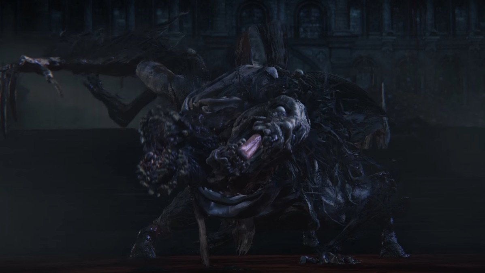
BOSS FIGHT Ludwig, The Holy Blade
If you're struggling with the boss, you can summon Valtr from the cave just before the boss room, providing you meet his requirements. Once you beat the boss, make sure to talk to his decapitated head, then attack it to get the Holy Moonlight Sword (or talk to him while wearing Church Attire and answer yes).
Not Over Yet
Before you progress to the Research Hall, make sure to reload the area as the Harrowed Hunter will appear over Ludwig's remains. If you didn't put Ludwig out of his misery, the Harrowed Hunter would do the job for you. Exhaust his dialogue then head out of the far end of the boss room and up a set of stairs.
In the corridor ahead will be a Church Servant and a Wheelchair Mob, but quickly head into the cell on the left and pick up the Frenzied Coldblood(9).Take them both down and explore the area. You'll find the vast majority of the doors are locked and open ones are empty, but there are two NPCs in the area (Old Hunter Yamamura & Brador) who are locked in cells. The key is found in the Research Hall, so it's worth revisiting the area later. In one of the open cells you'll find Fist Of Gratia on a rather large body.
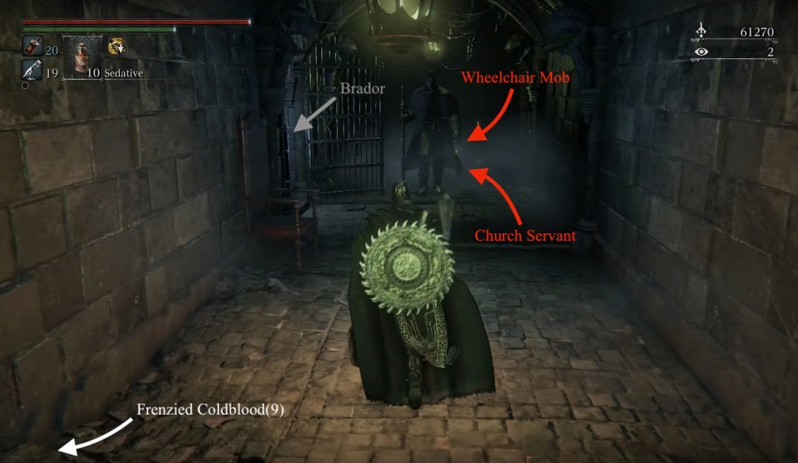
Once you're done in this corridor, head up the stairs into a grand cathedral looking area filled with beds. As you come up the stairs you will see a woman praying at an altar ahead of you. DON'T approach yet. First, on one of the beds you'll find a Great One's Wisdom, then turn around to see three Giant Rats patrolling a darkened alcove. Kill them and grab the Blood Stone Chunk that they're guarding. Make sure you're at full health and you're ready, then approach the altar at the far end of the room.
As you approach, the woman at the altar will get up, but another hunter will run in from the side. This is a dangerous fight. The hunter uses a sword while the woman at the altar will spam you with magic from a distance and use the Threaded Cane when you get close to her. The best tactic to employ goes as follows:
- Pull the sword-wielding Hunter down the stairs and into the corridor you were just fighting in, so you can kill her in a fair fight.
- Once she is down, head back up and deal with the altar woman.
Once they're both down, head to the altar and interact with it. You'll use the Eye Pendant to gain access to The Research Hall.
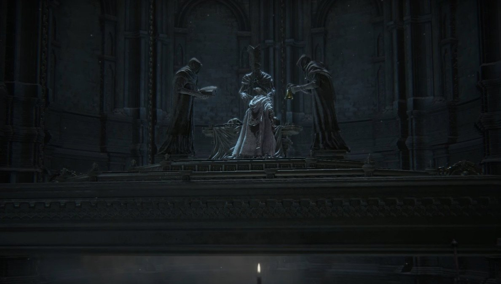
If, after activating the alter, you step off of it back onto the ground, the alter will rise up into the air, and a second altar will come up from below to take its place. On the second altar you will find Laurence's Skull. If you pull the lever and step onto the altar that had the skull, you can ride it down into the floor, where you will find a treasure chest containing the Church Cannon. Ride the altar back up, use the lever to bring the surgery altar back down, and ride it up into the Research Hall.
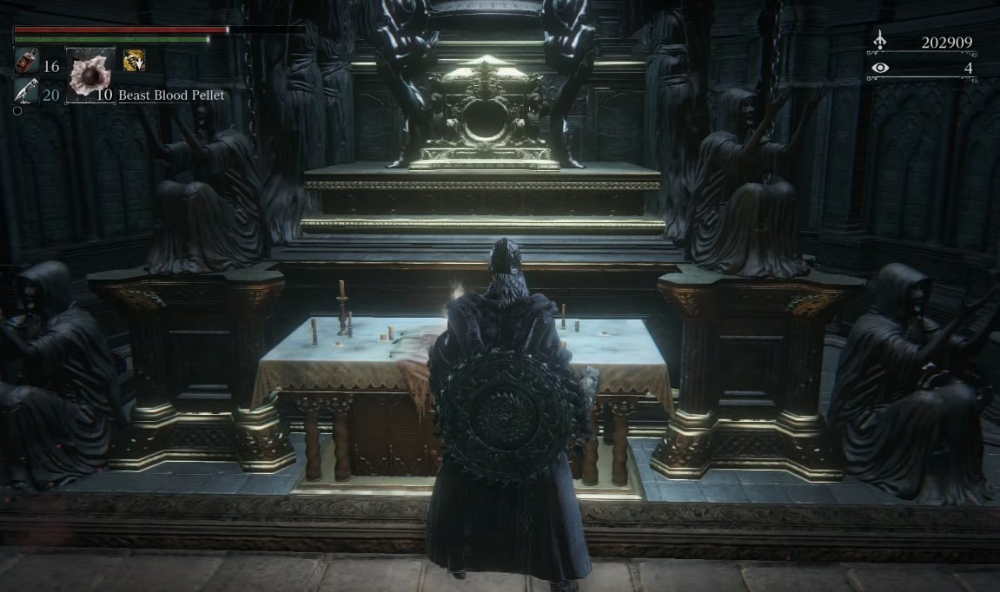
Alternatively, now that you have Laurence's Skull, you can return to the nightmare version of the Grand Cathedral (the room where you found the Eye Pendant) to challenge another boss.
BOSS FIGHT: Laurence, the First Vicar
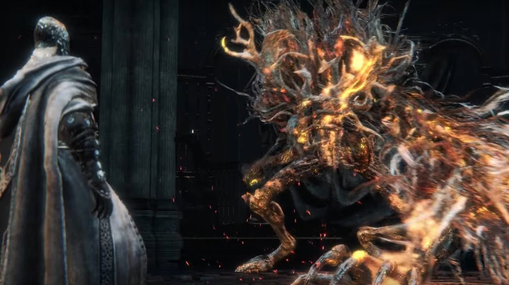
The Hunter's Nightmare Maps
 Anonymous
AnonymousYou dont have to be high level to do **** here. You can get the beast cutter, beast hunter saif, amygdala arm, whirligig saw, various armor pieces, and some blood chunks just by sprinting around this place like a mad man.
- Anonymous
- Anonymous
This location would've been 100% more tolerable if they just added a ****ing lamp in the area right after the church near the dude with the claws
- Anonymous
When you climb the ladder leading to the big pool of blood with the two Nightmare Executioners, look up at the shape of the Astral Clocktower. We don't get a good look at its profile anywhere else, but from the top of that hill, doesn't it almost look like a wolf howling at the sky?
- Anonymous
You don't need the Impurity Rune from joining the League; it just makes Valtr available as a summon. You can access the DLC just fine without it, as soon as you have the Eye of the Blood-Drunk Hunter.
- Anonymous
Whoever made the map, thank you. So much better than the “bring your little sister to cartography” editions on the base game pages.
- Anonymous
They put the vicars in the worst place possible,**** those mutated spaghetti
- Anonymous
Can somebody tell me how to solve problem with DLC, the eye of a blood drunk hunter is not appear in hunters dream
- Anonymous
BL 83, Hunter Axe+7 and Valtr for back-up put this fight on easy mode and I got him first try. I have a harder time with the Beast Claw Hunter than I did with this boss. Just whale on him with the axe, let Valtr set you up for a few viscerals, and stay the hell outta the AoE for phases 3 & 4. I still have 4 vials and 18 bullets at the end.
- Anonymous
- Anonymous
Was having a hard time fighting the BSB in the cave, but then it lunged sideways and fell off the map, didn't get its souls until about a minute later. Cheesed af
- Anonymous
It is possible to cheese the Blood-Starved Beast by luring it out of the cave. It will get stuck near the carriage by the cave entrance and can be easily killed there. Or just fight it in it's lair like a real Hunter.
Harrowed Hunter didn't show up after Ludwig for me. I left and reloaded the area multiple times. And yes, I did in fact start his quest at the shortcut to the first lamp prior to the boss fight. Any ideas?
- Anonymous
Those hunters are just *****ing ridiculously OP. Their hit box is as large as the street and if they aren't wippin they're shooting in a cone area...who the ***** designed those ? Can he get cancer already ?
- Anonymous
Those 2 hunters before the lift are hell i got of a viceral attck doing what i considered to be good damage at the point in the game i was at. Then i noticed his health bar hadnt moved. Oh must be a glitch...15 viceral attacks later i am out of bullets and ahe is on half health...shit
- Anonymous
when i went up to the altar, the hunter that attack had everything i have, same weapons and outfit, is this hunter a clone of the player?
- Anonymous
- Anonymous
If you need Bullets or Blood Vials, Spawn at church, kill both Big Guys outside with R2 Charge to back, Backstab R1, R2 Charge (with LHB+10). Cannon'Guy drops up to 10 bullets and Axe'Guy 5-6 Vials, then turn around go towards bossroom. Turn right behind the Gate, kill the Witch and then kill the Bloodyskeletom at Gate for another 5 Vials. 10 Vials, 10 Bullets in unter 2 min.
- Anonymous
Who is the enemy right outside the building where you get the boom hammer (the one using beast claws)
- Anonymous
So did you guys give up on this when the DLC came out or what?
- Anonymous
In particular, the location of the Constable's Garb and Gloves are just flat out wrong, not sure why they're still there in the text or even how the mistake was made in the first place.
- Anonymous
The recommended BL for NG+ is far too high. I struggled at around 105 (25 vit, 25 end, 25 str, 25 skl, 18 bldt) and then grinded to like 135 (40 vit, 26 end+runes, 30 str, 30 skl, 28 bldt); I have been stomping the bosses so far with Ludwig's HB.I dealt with Ludwig's first form on the first post grind run by using the stairs to my advantage and the second form is a joke, esp with 40 vit.Living Failures was actually more difficult. The trick is to just backstab-visceral whenever the meteor animation begins. Again 40 vit makes it easy to survive.Maria... again first try. With high health and endurance, you can stun-lock her to deal massive damage. None of her combos will kill you and she's very easy to parry.A BL of 110 will give you a far better challenge (and better time) with a Vit of around 30-35.
- Anonymous
- Anonymous
Am I the only one who notices that the magic slamming woman says the same lines as Vicar Amelia pre-cleric beast transformation? Wearing same clothes and same hair too.. Same voice even. WHY DOES THE WIKI NOT EVEN ACKNOWLEDGE THIS?
- Anonymous
the sheer feeing of being overwhelmed by dopamine and a sense of accomplishment after killing ludwig whilst underleveled by a good margin is something I truly believe every person should experience
0
+10
-1